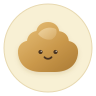
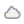
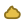
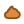
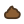
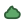
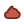
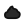

排泄图标套件
乐记自绘 · 对齐 brand-spec 1.8px 描边 · 禁止参考产品官方美术
主视觉（卡通）

用途：空态插画、引导、营销轻量素材
文件：poop-cartoon.svg · 96×96 画板 · 圆形暖底 + 软堆叠
试验 · image gen 透明底（可换背景）


源：image gen → 白底 JPG → 去底 PNG。
文件：poop-cartoon-gen.png（512）· poop-cartoon-gen-96.png。
背景由外层 shell 填充，主体保持强轮廓。对比上方 SVG：矢量仍更干净、可编辑；gen 仅作装饰向候选。
类型图标 · 多尺寸（UI 用）
快捷 36–48
列表 34
摘要 26
轴 16–20
单色 currentColor，背景由 .type-icon 的 --poop 语义色承载。
尿量 pee_amount 1–3
1 小
2 中（默认）
3 大
便量 stool_amount 1–4
1 一点
2 偏少
3 正常
4 偏多
软硬 stool_consistency 1–4
1 稀
2 偏软
3 正常
4 偏硬
色 stool_color 0–7
0 未选






